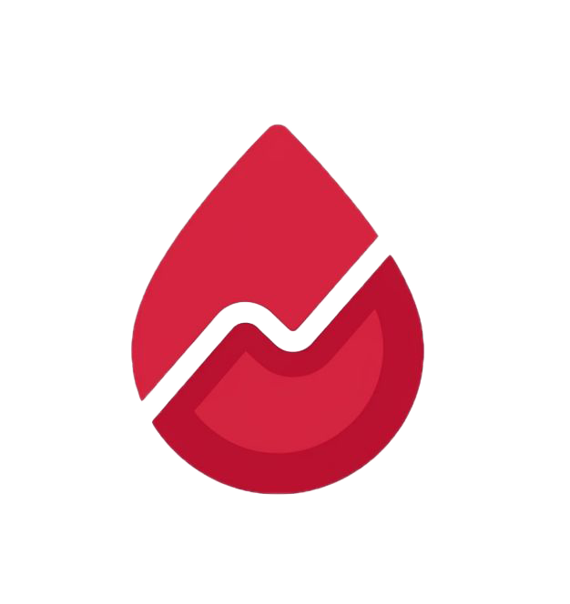

GlicHelpVersão 1.0 · vigente desde 28 de setembro de 2026
Resumo em linguagem simples
Ao criar uma conta ou usar o GlicHelp, você declara que leu e concorda com estes Termos de Uso e com a Política de Privacidade. Se não concordar, não use o aplicativo.
O GlicHelp é um projeto sem fins lucrativos desenvolvido pela equipe GlicHelp, sob a responsabilidade de Kaio Fernandes Blumenschein, como projeto acadêmico, oferecido gratuitamente. Contato: kaio.blumenschein@hotmail.com.
O GlicHelp tem finalidade informativa e de apoio à organização. Ele não é um dispositivo médico, não faz diagnóstico, não prescreve nem ajusta tratamento e não substitui consultas, exames ou a orientação de médicos, enfermeiros, nutricionistas ou outros profissionais de saúde. Nunca altere seu tratamento com base apenas no aplicativo. Em caso de sinais de hipoglicemia ou hiperglicemia grave, procure atendimento imediato ou ligue 192 (SAMU).
A calculadora aplica uma fórmula simples de correção — (glicemia atual − HGT alvo) ÷ fator de sensibilidade — usando somente os valores que você informa. O resultado é uma estimativa de apoio: confira sempre a dose com a prescrição da sua equipe de saúde. Valores configurados de forma errada geram resultados errados. A calculadora não considera carboidratos da refeição, insulina ainda ativa no corpo, exercícios, doenças ou outros fatores que o seu médico considera.
O GlicHelp pode ser usado por pessoas de qualquer idade. Menores de 18 anos só podem ter conta com a autorização de um dos pais ou do responsável legal, dada no cadastro. O responsável deve acompanhar o uso, especialmente no caso de crianças, e responde pelas informações fornecidas em nome do menor.
É proibido: usar o GlicHelp para fins ilegais; tentar acessar dados de outras pessoas; sobrecarregar, invadir ou testar a segurança do sistema sem autorização; enviar conteúdo ofensivo ou malicioso; ou usar o aplicativo para oferecer serviços de saúde a terceiros. Contas que violarem estas regras podem ser suspensas.
O GlicHelp é gratuito e usa serviços de hospedagem gratuitos. Pode ficar lento, fora do ar ou passar por mudanças sem aviso prévio, e o projeto pode ser encerrado. Não use o GlicHelp como único lugar onde guarda informações importantes do seu tratamento: exporte o histórico em PDF periodicamente. Se o serviço for encerrado, avisaremos com antecedência razoável sempre que possível.
Trabalhamos para que o aplicativo funcione corretamente e com segurança, mas, por sua natureza de apoio, as decisões sobre saúde e tratamento são sempre suas e da sua equipe de saúde. Nada nestes termos limita direitos que você tenha pelo Código de Defesa do Consumidor ou por outra lei brasileira.
O nome, a marca, o layout e o código do GlicHelp pertencem à equipe responsável. Os dados que você registra continuam sendo seus.
Podemos atualizar estes termos. Mudanças importantes serão avisadas no aplicativo ou por e-mail e, quando a lei exigir, pediremos um novo aceite. A versão e a data ficam no topo desta página.
Estes termos seguem as leis brasileiras, em especial o Código de Defesa do Consumidor, o Marco Civil da Internet (Lei nº 12.965/2014) e a Lei Geral de Proteção de Dados (Lei nº 13.709/2018). Fica eleito o foro do domicílio do usuário.
Dúvidas, sugestões ou pedidos: kaio.blumenschein@hotmail.com.
Termos de Uso · Política de Privacidade · Voltar para o cadastro